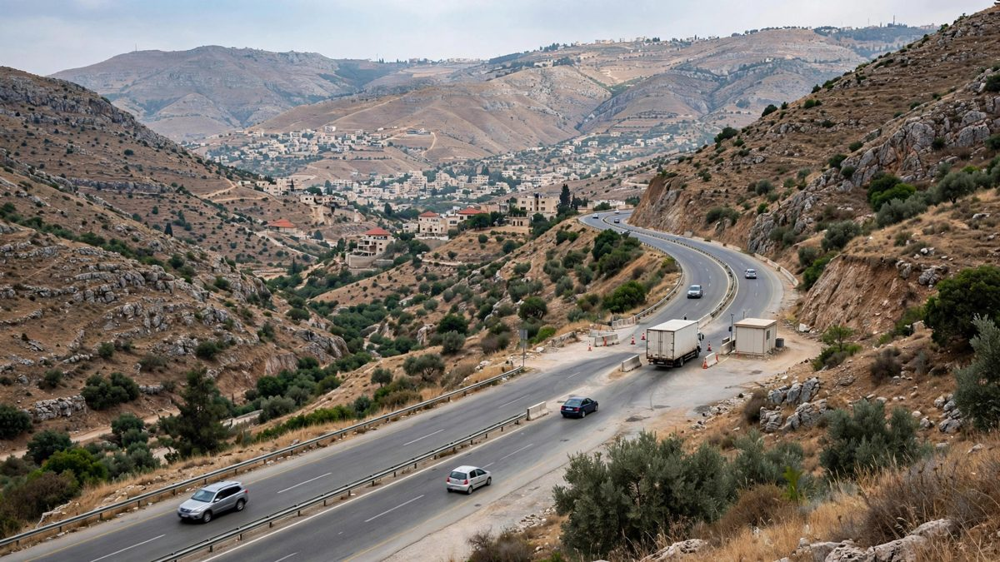

हिजबुल्लाह भन्छ, जफत गरिएका विस्फोटक पदार्थ उसका आफ्नै थिए, इजरायली सैनिकका लागि थिए
हिजबुल्लाहका एक सांसदले बेका र बेरुतबीचको राजमार्गमा जफत गरिएका ७८० किलोग्राम विस्फोटक पदार्थ समूहकै भएको बताए। वासिङ्टनले लेबनानलाई ती फिर्ता गर्ने कुरा सोच्नै नहुने बतायो।

मुख्य बुँदाहरू
- अपडेट २३:५२ UTC, १५ अक्टोबर २०२६। विकासशील समाचार।
- बेरुत: हिजबुल्लाहले बिहीबार, १५ अक्टोबरमा, गत साता लेबनानी सुरक्षा बलले जफत गरेको ठूलो परिमाणको विस्फोटक पदार्थ समूहकै भएको र त्यो दक्षिणी लेबनानमा इजरायली सैनिकविरुद्ध प्रयोग गर्नका लागि भएको बतायो।
- सांसद हसन फदलल्लाहले बेरुतस्थित संसदमा पत्रकारहरूलाई गाडी र त्यसको सामान हिजबुल्लाहकै भएको बताए। उनले समूहले सुरक्षा निकायहरूलाई तुरुन्त सम्पर्क गरेको, विस्फोटक पदार्थ फिर्ता मागेको र पक्राउ परेका…
अपडेट २३:५२ UTC, १५ अक्टोबर २०२६। विकासशील समाचार।
बेरुत: हिजबुल्लाहले बिहीबार, १५ अक्टोबरमा, गत साता लेबनानी सुरक्षा बलले जफत गरेको ठूलो परिमाणको विस्फोटक पदार्थ समूहकै भएको र त्यो दक्षिणी लेबनानमा इजरायली सैनिकविरुद्ध प्रयोग गर्नका लागि भएको बतायो।
सांसद हसन फदलल्लाहले बेरुतस्थित संसदमा पत्रकारहरूलाई गाडी र त्यसको सामान हिजबुल्लाहकै भएको बताए। उनले समूहले सुरक्षा निकायहरूलाई तुरुन्त सम्पर्क गरेको, विस्फोटक पदार्थ फिर्ता मागेको र पक्राउ परेका दुई जनालाई छाड्न माग गरेको बताए। उनले त्यो सामान लेबनानभित्र आक्रमणका लागि भएको दाबी अस्वीकार गरे र त्यो लेबनानी भूमि कब्जा गरेका इजरायली बलविरुद्ध मात्र प्रयोग गर्न खोजिएको बताए।
के जफत भयो
लेबनानी अधिकारीहरूले बेरुतलाई पूर्वी बेका उपत्यकासँग जोड्ने मुख्य राजमार्गको एक जाँच चौकीमा गाडी रोके। न्यायिक अधिकारीहरूमा आधारित रिपोर्टले सामान ७८० किलोग्राम विस्फोटक पदार्थ भएको बतायो, जसमा २५० किलोग्राम TNT र २५० किलोग्राम C-4 थियो। प्रधानमन्त्री नवाफ सलामले ट्रक बेकाबाट बेरुततर्फ जाँदै गर्दा धर अल-बैदर क्षेत्रमा रोकिएको र भारी सामान देखेर अधिकारीहरू शंकित भएको बताए। दुई जना पक्राउ परे।
हिजबुल्लाहका एक अधिकारी र एक लेबनानी सुरक्षा स्रोतले रोयटर्सलाई विस्फोटक पदार्थ इजरायली सैनिकलाई लक्षित गर्ने विस्फोटक ड्रोनमा राख्न खोजिएको बताए। लेबनानी अनुसन्धानकर्ताहरूले त्यो विवरण सार्वजनिक रूपमा पुष्टि गरेका छैनन्। सलामले अनुसन्धान विस्तार हुने र जिम्मेवार भेटिने कसैलाई पनि छुट नदिइने बताए।
जफतको घोषणा हुँदा अधिकारीहरूले गाडी कसको हो भनेर बताएका थिएनन्। त्यो मौनताले लेबनानमा विस्फोटक पदार्थ देशभित्र कार बम वा हत्याका लागि हुन सक्ने चिन्ता बढायो। फदलल्लाहले ती आरोप निराधार भएको बताए।
वासिङ्टनको कदम
अमेरिकी विदेशमन्त्री मार्को रुबियोले बिहीबार राष्ट्रपति जोसेफ आउनसँगको फोनमा जफतको विषय उठाएको विदेश मन्त्रालयका एक अधिकारीले बताए। रुबियोले लेबनानलाई उक्त ढुवानीको आदेश दिने, पैसा दिने र निर्देशन दिने व्यक्तिहरूलाई जवाफदेही बनाउन आग्रह गरे र विस्फोटक पदार्थ हिजबुल्लाहलाई फिर्ता गर्ने कुरा सोच्नै नहुने बताए। उनले झडप टार्न लेबनानी र इजरायली बलबीच सिधा सैन्य सम्पर्कका लागि पनि आग्रह गरे।
आउनले रुबियोलाई सेना र सुरक्षा बलले सशस्त्र प्रदर्शन रोक्ने, हतियार जफत गर्ने र तस्करीविरुद्ध लड्ने आदेश पालना गरिरहेको बताएको लेबनानी राष्ट्रपति कार्यालयले जनायो। उनले अदालतले आफूकहाँ आएका मुद्दा कुनै छुट नदिई अघि बढाउने बताए। आउनले वासिङ्टनलाई दक्षिणी लेबनानका सहर र गाउँमाथिका आक्रमण रोक्न इजरायललाई दबाब दिन पनि आग्रह गरे।
बेरुतका लागि परीक्षा
यो स्वीकारोक्तिले लेबनानका सबै हतियार राज्यको नियन्त्रणमा ल्याउने सरकारी प्रतिज्ञामाथि दबाब बढाएको छ। २ मार्चमा सरकारले हिजबुल्लाहका सैन्य गतिविधिमा प्रतिबन्ध लगायो, समूहले तेहरानको समर्थनमा इजरायलमाथि रकेट हानेको केही घण्टापछि। त्यो कदमले लेबनानलाई २८ फेब्रुअरीमा अमेरिका र इजरायलले इरानमाथि हमला गरेपछि सुरु भएको क्षेत्रीय युद्धमा तान्यो।
यस वर्ष अमेरिकी मध्यस्थतामा भएको सम्झौताअनुसार बेरुतले हिजबुल्लाहलाई निःशस्त्र गर्ने प्रतिज्ञा गरेको छ, त्यसपछि इजरायली सैनिक लेबनानी भूमिबाट चरणबद्ध रूपमा फिर्ता हुनेछन्। इजरायली बल लेबनानमा रहेसम्म हिजबुल्लाहले हतियार बुझाउन अस्वीकार गरेको छ, र इजरायलले आफ्ना कारबाही हिजबुल्लाहविरुद्ध भएको भन्दै दक्षिणमा लक्ष्यमाथि हमला जारी राखेको छ।
सन् २०२४ को अन्त्यमा आफ्नो सहयोगी बसर अल-असद सत्ताबाट हटेपछि समूहले सिरियाहुँदै आउने मुख्य हतियार आपूर्ति मार्ग गुमायो। लेबनानी सैनिकले सन् २०२५ मा दक्षिणमा हिजबुल्लाहका भण्डार जफत गरी नष्ट गरे, तर नयाँ युद्ध सुरु भएपछि त्यो काम रोकियो। बिहीबारको दाबीले समूहले देशभर सैन्य सामान अझै ओसारिरहेको देखाउँछ, र अब विस्फोटक पदार्थ, दुई बन्दी र तिनलाई पठाउने मानिसबारे के गर्ने भन्ने निर्णय सरकारकै हातमा छ।
समयरेखा
- Feb 28, 2026अमेरिका र इजरायलले इरानमाथि हमला गर्छन्, त्यसपछि लेबनानलाई पनि तान्ने क्षेत्रीय युद्ध सुरु हुन्छ।
- Mar 2, 2026हिजबुल्लाहले तेहरानको समर्थनमा इजरायलमाथि रकेट हानेको केही घण्टापछि लेबनानले समूहका सैन्य गतिविधिमा प्रतिबन्ध लगाउँछ।
- Oct 15, 2026हिजबुल्लाह सांसद हसन फदलल्लाह संसदमा पत्रकारहरूलाई गत साता जफत गरिएका विस्फोटक पदार्थ समूहकै भएको र इजरायली सैनिकविरुद्ध प्रयोग गर्न खोजिएको बताउँछन्।
- Oct 15, 2026अमेरिकी विदेशमन्त्री मार्को रुबियो राष्ट्रपति जोसेफ आउनलाई विस्फोटक पदार्थ हिजबुल्लाहलाई फिर्ता गर्ने कुरा सोच्नै नहुने बताउँछन्।